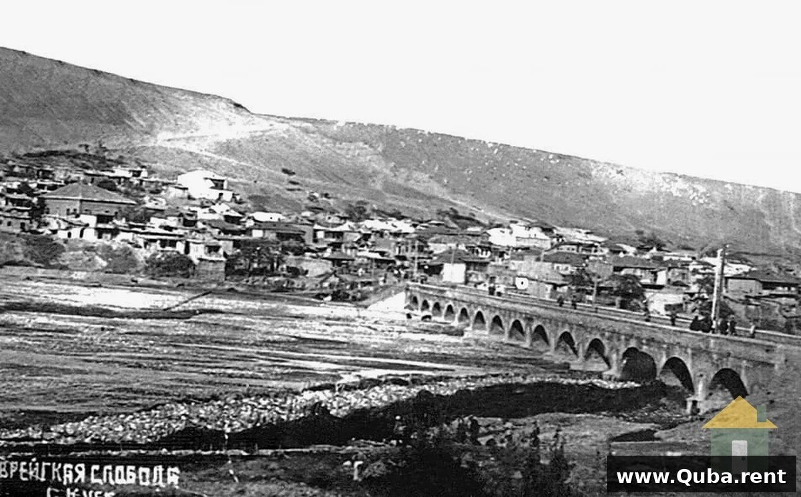

В живописных горах Азербайджана, вдали от шумных мегаполисов, расположено уникальное место, которое по праву считается одной из главных культурных достопримечательностей не только региона Куба, но и всего Кавказа. Красное Село (Гырмызы Гасаба), или как его часто называют — Красная Слобода, это единственный в мире городок с преобладающим еврейским населением, расположенный за пределами Израиля и Соединённых Штатов Америки.
Этот удивительный посёлок, расположенный на северо-востоке Большого Кавказского хребта в Губинском районе Азербайджана, уже более 280 лет является домом для горских евреев — одной из самых уникальных еврейских общин в мире. Красное Село часто называют «Иерусалимом Кавказа» за его богатую историю, сохранившиеся традиции и особую атмосферу, которую невозможно найти больше нигде в мире.
История возникновения и развития
История Красного Села неразрывно связана с богатой и сложной судьбой еврейского народа. Появление горских евреев на Кавказе датируется I веком нашей эры, хотя по другим данным их переселение на эти земли произошло в середине V века, когда персидские правители переселили их из Персии на территорию Кавказской Албании.
Организованное же поселение было основано в 1742 году, когда под покровительством Губинского хана был создан посёлок, ставший мононациональной закрытой еврейской общиной. Название «Красная Слобода» происходит от характерных красных черепичных крыш, которые можно увидеть и сегодня.
Первые еврейские поселенцы нашли убежище в горах Кавказа, спасаясь от римского преследования
Официальное основание Красного Села под покровительством Губинского хана
Построен первый деревянный мост, связавший Красную Слободу с городом Куба
Посёлок официально переименован в «Красную Слободу»
Получил азербайджанское название «Гырмызы Гасаба»
Открытие Музея горских евреев в здании исторической синагоги
Празднование 290-летия посёлка
Уникальная культура и традиции
Красное Село — это удивительный пример мирного сосуществования разных культур на протяжении столетий. Несмотря на то что подавляющее большинство населения исповедует иудаизм, в селе всегда жили в мире и согласии с соседями-азербайджанцами. Этот пример толерантности и взаимного уважения уникален для всего Кавказского региона и является гордостью азербайджанского народа.
🎭 Культурные особенности
Язык джухури
Уникальный горско-еврейский язык, входящий в группу иранских языков
Кагал
Традиционная община с функциями самоуправления
Религиозные традиции
Сохранились традиции ортодоксального иудаизма и народные обычаи
Кухня
Уникальное сочетание еврейских и азербайджанских кулинарных традиций
Свадьбы
Традиционные церемонии под хупой во дворе синагоги
Гостеприимство
Радушно принимают гостей любых вероисповеданий
Синагоги Красной Слободы
Особую гордость Красного Села составляют его синагоги. В посёлке сохранились 7 синагог, каждая из которых является уникальным архитектурным памятником и центром духовной жизни общины. Архитектурную основу всего посёлка составляют именно здания синагог, что подчёркивает их важность для жизни местных жителей.
🏛️ Главные синагоги
Шестикупольная синагога — действующий храм с коллекцией из 70 наставлений для чтения Торы
Синагога «Карчоги» — здание, в котором сейчас располагается Музей горских евреев
Исторические кварталы — посёлок делится на 9 кварталов, каждый со своей историей
Музей горских евреев
Одним из главных культурных центров Красного Села является Музей горских евреев, открытый в 2019-2020 годах в здании исторической синагоги «Карчоги». Это первый в своём роде музей, посвящённый истории и культуре горских евреев.
📜 Экспозиция музея
Одежда и украшения
Традиционные костюмы и ювелирные изделия горских евреев
Рукописи и книги
Редкие издания и рукописи на языке джуури и иврите
Ритуальная утварь
Предметы религиозного культа и повседневного обихода
Религиозная литература
Тора и священные тексты еврейской традиции
📌 Интересный факт
Здание синагоги «Карчоги», в котором располагается музей, имеет квадратную форму и высоту потолков 5 метров. Два яруса здания позволяют разместить обширную экспозицию, рассказывающую о быте, верованиях и традициях горских евреев на протяжении веков.
Архитектура и планировка
Красное Село имеет уникальную планировку, сформировавшуюся на протяжении почти трёх веков. Исторически посёлок делился на пять кварталов: Карчаг, Гиляки, Агаджани, Чепкени и Мизрахи. В настоящее время Красное Село состоит из девяти кварталов, каждый из которых сохраняет свою историческую самобытность.
Характерной особенностью архитектуры являются красные черепичные крыши, давшие посёлку его название. Эта традиция восходит к местной глине, которая при обжиге приобретает характерный кирпично-красный оттенок. Сегодня новые дома в селе также строятся с красными крышами, сохраняя исторический облик.
Современное Красное Село — это стильный населённый пункт, состоящий в основном из двух- и трёхэтажных коттеджей, магазинов и бытовых объектов с чистыми и аккуратными улицами. При этом здесь бережно сохраняются исторические здания и традиционный уклад жизни.
📊 Население
1989 г.: 4 524 человека
2010 г.: 3 557 человек
В настоящее время: около 3 000 жителей
🕌 Синагоги
В посёлке сохранились 7 синагог, две из которых были возвращены общине после обретения Азербайджаном независимости.
🗣️ Языки
Жители говорят на языке джухури, азербайджанском и русском языках. Многие владеют тремя языками.
🎨 Ремёсла
Традиционно развиты ковроткачество, ювелирное искусство и торговля. Известны губинские ковры.
Толерантность и мультикультурализм
Красное Село является живым примером толерантности и мультикультурализма, которые исповедует Азербайджан. На протяжении веков горские евреи чувствовали себя полноправными членами азербайджанского общества, сохраняя при этом свою уникальную идентичность, традиции и религию.
Государственная политика Азербайджана направлена на сохранение и развитие культурного многообразия. Здесь каждый народ, включая горских евреев, имеет возможность свободно развивать свою культуру, язык и религию. Это делает Красное Село не просто историческим памятником, но и живым свидетельством возможности мирного сосуществования разных культур и религий.
Как добраться
Красное Село расположено всего в 5 километрах от города Куба, на противоположном берегу реки Кудиалчай. Добраться до посёлка можно:
- На автомобиле: из города Куба через мост через реку Кудиалчай
- На такси: из любой точки Кубы (около 10-15 минут)
- Пешком: около 40-50 минут через живописный мост
Музей горских евреев открыт для посещения ежедневно. Рекомендуем заранее связаться с туристическим центром для организации экскурсии с гидом, который расскажет об истории посёлка и покажет главные достопримечательности.
Откройте для себя культурное наследие
Забронируйте номер в «Горном Доме Куба» и совершите увлекательную экскурсию в Красное Село
Забронировать